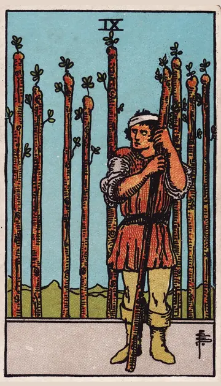

正位置ワンドの9の正位置
キーワード：用心・粘り強さ・最後のひと踏ん張り
恋愛
過去の経験から、慎重になりやすい時です。
相手の気持ちあなたに惹かれつつも、慎重になっているようです。
この先慎重に進めることで、確かな関係を築けそうです。
アドバイス傷ついた経験を大切にしつつ、少しだけ心を開いてみましょう。
気をつけること用心しすぎて、相手の好意を疑わないように。
この先慎重に進めることで、確かな関係を築けそうです。
アドバイス傷ついた経験を大切にしつつ、少しだけ心を開いてみましょう。
気をつけること用心しすぎて、相手の好意を疑わないように。
人間関係
警戒心が強くなりやすい時です。
相手の気持ちあなたのことを、まだ見極めようとしているようです。
この先本当に信頼できる人が見えてきそうです。
アドバイス信頼できる人を見極めて、頼ってみましょう。
気をつけること身構えすぎて、壁をつくらないように。
この先本当に信頼できる人が見えてきそうです。
アドバイス信頼できる人を見極めて、頼ってみましょう。
気をつけること身構えすぎて、壁をつくらないように。
仕事・学業
疲れていても、あと一歩で成果が見える時期です。
この先粘った分だけ、成果にたどり着けそうです。
アドバイスゴールは近いので、ペース配分を考えて続けましょう。
気をつけること疲れをため込みすぎないように。
アドバイスゴールは近いので、ペース配分を考えて続けましょう。
気をつけること疲れをため込みすぎないように。
お金
慎重に、お金を守る時です。
この先守ってきたお金が、支えになりそうです。
アドバイスこれまで貯めたものを、大切にしましょう。
気をつけること警戒しすぎて、必要な出費まで我慢しないように。
アドバイスこれまで貯めたものを、大切にしましょう。
気をつけること警戒しすぎて、必要な出費まで我慢しないように。
生活
疲れていても、あと一歩で落ち着ける時です。
この先もう少しで、ほっとできそうです。
アドバイス休む時間を、先に予定に入れましょう。
気をつけること無理を重ねすぎないように。
アドバイス休む時間を、先に予定に入れましょう。
気をつけること無理を重ねすぎないように。
今日の運勢
最後のひと踏ん張りが効く日です。
この先頑張りが報われそうです。
アドバイス今日を乗り切ったら、しっかり休みましょう。
気をつけること無理を重ねて、体調を崩さないように。
アドバイス今日を乗り切ったら、しっかり休みましょう。
気をつけること無理を重ねて、体調を崩さないように。
逆位置ワンドの9の逆位置
キーワード：疲れ・警戒しすぎ・限界
恋愛
疲れがたまり、気持ちに余裕がない時です。
相手の気持ちあなたとの関係に、少し疲れを感じているようです。
この先休むことで、気持ちに余裕が戻りそうです。
アドバイス今は無理をせず、自分を休ませることを優先しましょう。
気をつけること疲れから、相手に冷たく当たらないように。
この先休むことで、気持ちに余裕が戻りそうです。
アドバイス今は無理をせず、自分を休ませることを優先しましょう。
気をつけること疲れから、相手に冷たく当たらないように。
人間関係
人を信じられず、孤立しやすい時です。
相手の気持ちあなたに心を開くのを、ためらっているようです。
この先助けを受け入れれば、状況が軽くなりそうです。
アドバイス一人で抱えず、助けを求めてみましょう。
気をつけること疑いすぎて、味方まで遠ざけないように。
この先助けを受け入れれば、状況が軽くなりそうです。
アドバイス一人で抱えず、助けを求めてみましょう。
気をつけること疑いすぎて、味方まで遠ざけないように。
仕事・学業
限界を感じやすい時期です。
この先体制を整えれば、また進めそうです。
アドバイス手放せる仕事は、人に任せましょう。
気をつけること限界を超えて頑張り続けないように。
アドバイス手放せる仕事は、人に任せましょう。
気をつけること限界を超えて頑張り続けないように。
お金
お金の心配で、心が疲れやすい時です。
この先相談すれば、気持ちが軽くなりそうです。
アドバイス心配なことを、誰かに相談してみましょう。
気をつけること不安から、極端な判断をしないように。
アドバイス心配なことを、誰かに相談してみましょう。
気をつけること不安から、極端な判断をしないように。
生活
疲れがたまり、暮らしに余裕がない時です。
この先休めば、余裕が戻りそうです。
アドバイス家事の手を抜ける所は、抜きましょう。
気をつけること頑張りすぎを、当たり前にしないように。
アドバイス家事の手を抜ける所は、抜きましょう。
気をつけること頑張りすぎを、当たり前にしないように。
今日の運勢
気力が続きにくい日です。
この先しっかり休めば、元気が戻りそうです。
アドバイス早めに休んで、回復に努めましょう。
気をつけること頑張りすぎを、当たり前にしないように。
アドバイス早めに休んで、回復に努めましょう。
気をつけること頑張りすぎを、当たり前にしないように。
このページの文章は、アプリ「ひとやすみタロット」の結果に使っている文章です。アプリでは、あなたの相談や、カードが出た位置（今の状況・これからの流れ・アドバイス）に合わせて、この中から文章を選びます。逆位置の読み方は逆位置のことをご覧ください。
「ワンドの9」が出たら、あなたの相談ではどう読む？
アプリでは、質問への答えに合わせて、カードの言葉をあなたの相談に合わせて届けます。
Android 対応・会員登録なし